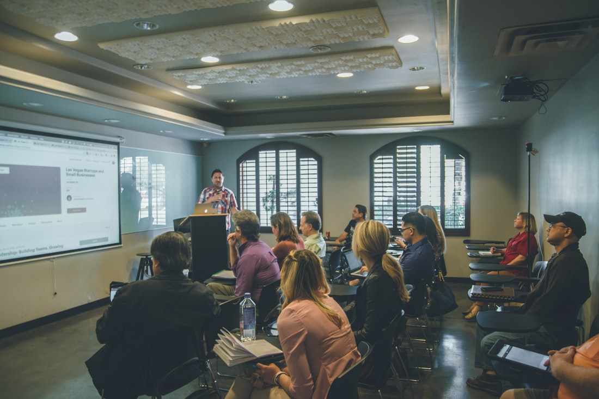

International strategic research & thought leadership
Research that builds
reputation.
We partner with companies, universities, professional bodies and international organisations — turning rigorous evidence into influential thought leadership and lasting advantage.
& development
practices
working worldwide
Research has the power to reshape organisations, strengthen societies and improve lives — to unlock opportunity, sharpen strategy and elevate how knowledge is created and shared.
We help clients generate rigorous, influential research and thought leadership — and we help them strengthen their internal research capabilities through our 360° research design and development consultancy. Our work enhances profile and reputation, supports commercial advantage, and lifts the strategic value of research across an organisation.
Read our storyA full spectrum of research capability
Research & Thought Leadership
A full-service practice delivering rigorous qualitative and quantitative, evidence-based outcomes — designed and delivered end to end.
Learn moreConsulting
We help organisations revitalise an existing research function — or build new research capability from the ground up.
Learn moreCoaching & Development
Coaching for individuals and teams to raise research confidence, capability and measurable, lasting impact.
Learn moreRigour you can trust, told in a way that moves people
Evidence with purpose
Rigorous, relevant insight built to drive real change — not research for its own sake.
Clarity & integrity
The highest methodological and ethical standards, communicated with transparency and craft.
Capability that endures
We leave your teams better equipped to design, manage and communicate research themselves.
Partnership & ambition
We work as strategic partners — listening deeply, challenging constructively, raising the bar.

The think tank
A strategic intelligence hub for the 21st century
BuildResearch operates as a premium think tank — a strategic thought leader blending rigorous analysis with creative insight to shape policy, business and the global professions. We function less like a traditional academic institute and more like a strategic intelligence hub, where data, narrative and design converge. We aim to do good for people, planet and society.
Explore the think tankA clear path from question to impact
Listen & frame
We start with your context, ambition and constraints — sharpening the real question worth answering.
Design & research
We design rigorous studies and gather robust qualitative and quantitative evidence.
Build & deliver
We turn findings into compelling thought leadership that earns attention and shapes decisions.
Embed & elevate
We leave your teams more confident and capable — equipped to carry the work forward.
Insight & thought leadership
What makes research influential beyond the academy?
Rigour earns trust — but narrative and design are what carry evidence into the rooms where decisions are made. A look at how the two combine to create reputation and real-world change.
Building a research culture that endures
Practical ways to leave teams better equipped long after a project ends.
Read moreFrom evidence to decision: closing the gap
Why the last mile — translation and communication — is where value is won.
Read more
Coaching researchers to greater impact
How confidence and capability turn good researchers into influential ones.
Read moreOur values
Evidence with Purpose
Insight that is rigorous, relevant and capable of driving real change.
Clarity & Integrity
The highest standards of methodological and ethical integrity, communicated with transparency.
Capability that Endures
We leave organisations better equipped to design, manage and communicate research themselves.
Partnership & Collaboration
We work as strategic partners — listening deeply and co-creating solutions.
Ambition for Better
We help clients raise standards, sharpen strategy and elevate impact.
Insight that Moves People
We translate complex evidence into narratives that shape decisions and reputation.
The people behind the research
A collective of experienced researchers with diverse industry backgrounds — people who have taught research, led research functions and shaped thought leadership across sectors.
Research Director
Principal Consultant
Head of Insight
Research Coach
Team profiles are illustrative — real names, photography and bios will appear here as the team grows.
We don't just deliver research — we leave organisations more confident, more capable, and better known for the quality of their thinking.The BuildResearch promise
Have a research question?
Tell us what you're working on — we'll point you to the right kind of help.